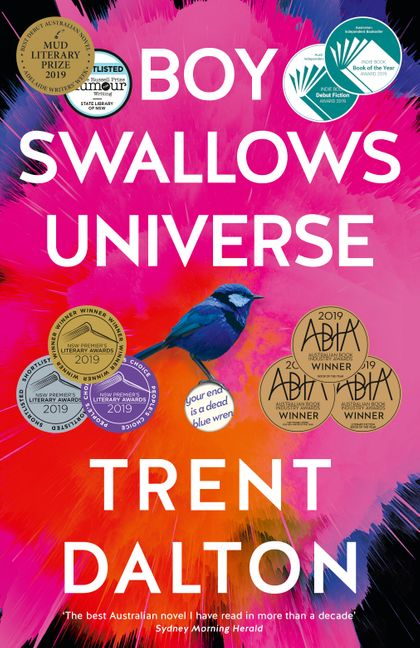

The Sydney Book Review is my kind of book review. It's online and free. Ever since I joined the blogging revolution in 2005 it's seemed crazy to me (not to mention precious) that so many of our literary publications are locked up and sold (usually at a loss) in tiny subscriptions.*So three cheers for the form of the Sydney Book Review. Alas I've only got about one cheer for its content. There's a strong academic and left ideological overlay in both the selection of subjects and of reviews themselves. Neither need be problems. But I mean both in the bad sense. There's rarely any joy in the reviews. They're usually not well written and many are laden with the presumptions, preoccupations and jargon of the academy. Anyway, I usually peruse what's on the menu and reading this review of Trent Dalton's work gives me as good a way as any to illustrate my concerns.
The reviewer, who's also the editor of the publication, announces that Dalton's books need to be subjected to greater critical scrutiny. After all, they sell in the hundreds of thousands. So she gives it critical scrutiny. Good idea. My own 'critical scrutiny' for what it's worth (not much) is that I listened to Dalton's first blockbuster novel Boy Swallows Universe on Audible (in a very animated and wide-eyed narration) and loved it. Its exuberance shines through. I thought it was a 'young adults' book which is not to disparage it. And I didn't feel patronised or that any dumbing down was going on. The author had previously won awards for features in the Courier Mail and was trying his hand at his first novel. And a rollicking good bit of magic(ish) realism it was too.
It's about a kid who's grown up in an abusive environment surrounded by 'bad characters' who gets himself into a big adventure and brings down a Mr Big of a crime syndicate. It's a story of good triumphing over evil. The hero, Eli, and the author have a lot in common. Dalton came from the wrong side of the tracks.
However the reviewer wishes she was reviewing a different kind of book. Her main gripe is that she disagrees with what she takes to be its politics. Indeed she suggests, it's a novel for Scott Morrison's Australia (Ouch! I wouldn't want to be the blogger for Scott Morrison's Australia.). "Boy Swallows Universe was published just a few months before Morrison was sworn in as Prime Minister in 2018" she stage whispers as an aside:
When Dalton waxes lyrical about ordinary readers, he sounds like he’s trying to distinguish them from a fantasy cohort of uptight critics. When he gets going about fan mail from tradies, he sounds like Scott Morrison.
Just think about that. Dalton says he writes for people like himself, and appreciates letters from tradies, and he's likened to our Prime Minister and Gaslighter in Chief. Another passage:
Dalton’s people make their own luck; all the better if they’re autodidacts. Teachers are treated with scorn, none more so than goody two-shoes Mrs Birkbeck, the school counsellor in Boy Swallows Universe, who tries to intervene in the chaotic lives of Eli and August. The ideology of the novel harmonises with the songbook of News Limited: the state is an ineffective guardian of the poor and has no role to play in supporting social mobility or addressing structural disadvantage.
So Dalton is telling a story — as we'll see it's based on his own experience — but the reviewer wants it to be a representative story. In some sense, it has to be representative to succeed. It is representative of extraordinariness (isn't that one of the main roles of fiction?). It's just not demographically representative as judged by current social science. Further, the reviewer wants to take Dalton's story as some kind of statement about who he votes for. It's a few years since I listened to the book, so I could be wrong, but I don't recall Dalton suggesting that "the state is [such] an ineffective guardian of the poor [that it] has no role to play in supporting social mobility or addressing structural disadvantage". My recollection is just that the novel does not chance its arm on that old chestnut of upper middle-class dinner parties "What is the proper role of government?". If I'd had to guess, I'd say that Dalton would vote Labor, but I might easily be wrong. But if I am then more reason for me to wonder if there's anything in Dalton's experience that might help me revise my own priors. I'll certainly hazard a guess that he had more than one government-funded "ineffective guardian" in his time as one of the poor. Since she's so interested in this aspect of the novel, perhaps the reviewer could take more interest in "ineffective guardians" of the poor and how governments serve them up again and again. You can still do that without denying governments a major role in ameliorating inequality and other aspects of our society when the subject comes up at a dinner party. Here's the most telling passage of the review:
It’s well known that Boy Swallows Universe draws on Dalton’s childhood experiences, that Dalton, like Eli Bell, found safe passage through a violent and traumatic childhood and became a journalist at News Limited. Dalton’s story is exceptional and Eli’s coming of age reads like a fairytale, not because of the supernatural embellishments, but because of its sheer unlikelihood. For certain readers, it is no doubt reassuring to learn of individuals who have overcome the obstacles of trauma, poverty and social marginalisation to attain the markers of middle-class success. This fairytale, in which a kid hauls himself up by his bootstraps through strength of will and character, relies on and reinforces pernicious and demonstrably untrue ideas about poverty and social marginalisation – namely, that it requires nothing more than effort to get out of it. There’s a mountain of empirical research that shows this proposition to be false.
Dalton’s people make their own luck; all the better if they’re autodidacts. Teachers are treated with scorn, none more so than goody two-shoes Mrs Birkbeck, the school counsellor in Boy Swallows Universe, who tries to intervene in the chaotic lives of Eli and August. The ideology of the novel harmonises with the songbook of News Limited: the state is an ineffective guardian of the poor and has no role to play in supporting social mobility or addressing structural disadvantage.
Well, my gob was truly smacked. First, the reviewer seems to think that the novelist's task is to represent the findings of social science on structural inequality. I mean you could write a novel about Michelangelo producing the Pieta, the David and the Sistine Ceiling, but how many people are going to produce the greatest artworks in Christendom? The idea that a little boy could grow up and do that — I mean what are the odds? Would social science say that was representative of the reality of your average life in Renaissance Florence (I hear they had a lot of structural inequality back then)? Second, my flabber was utterly ghasted at the way in which the reviewer quotes the author's own life as no match for 'empirical research'. How dare the author use his own survival and ultimate triumph over difficult circumstances as the basis of a fictionalised story of someone triumphing over difficult circumstances! "There’s a mountain of empirical research that shows this proposition to be false." 'Nuf said.
* This is becoming less true as quite a few printed journals also make themselves available online. But plenty don't or require subscriptions. What's the alternative I hear you cry. Well, most get grants from governments and/or are subsidised by universities and philanthropy, and most of the rest is a labour of love by various academics and writers around the traps. Many aren't well paid, so it would be good to get them some money, but they usually get peanuts through selling subscriptions. And usually the physical publication just amps up losses, especially when properly accounted for in all the management time spent on it. I suspect what drives the old fashioned model is a nostalgic guild mentality of those involved. It's sad to watch those who fancy themselves as an intellectual vanguard being so slow to embrace the possibilities of new technology. But the Sydney Book Review's editor is keen on the responsiveness and low cost of publishing online. So good on her.
Philip Roth had one of his characters say this in I Married A Communist:
And that is art -- break from the abstraction, go for the direct and immediate and often contradictory.
I just re-read this after years Antonios, and it looks like I missed your comment first time round - great comment! Thanks.